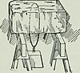

regelation

Definition: Regelation is the phenomenon of ice melting under pressure and refreezing when the pressure is reduced. This can be demonstrated by looping a fine wire around a block of ice, with a heavy weight attached to it. The pressure exerted on the ice slowly melts it locally, permitting the wire to pass through the entire block. The wire's track will refill as soon as pressure is relieved, so the ice block will remain intact even after wire passes completely through. This experiment is possible for ice at −10 °C or cooler, and while essentially valid, the details of the process by which the wire passes through the ice are complex. The phenomenon works best with high thermal conductivity materials such as copper, since latent heat of fusion from the top side needs to be transferred to the lower side to supply latent heat of melting. In short, the phenomenon in which ice converts to liquid due to applied pressure and then re-converts to ice once the pressure is removed is called regelation.
Source: Wikipedia
Wikipedia Page (Something wrong with this association? Let us know.)
Wikidata Page (Something wrong with this association? Let us know.)